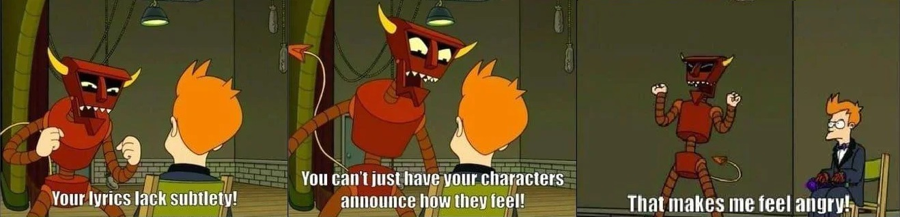

I listened to more than 220 albums in 2022.

So yeah, this is super late. Sorry, but I think I have (mostly) good excuses. I was originally aiming for late December or the first week of January, but I've gotten sick twice, had to work a ton during hell week (Christmas to New Years), spent a lot of time re-listening, had some computer problems, lost a bunch of my progress once with what I think was file conflicts with cloud syncing or something, and was also just stuck in the fidgeting phase for a long time, but I think I could actually fidget with this forever and need to just put it out despite it being unfinished. But, hey at least I got it out during January (it's still January in Hawaii). And come on, this isn't serious business, anyway. Just for fun.
This was originally supposed to be a quick-and-dirty look at what I thought were good, interesting, and trash albums of 2022, but it stopped being 'quick' pretty early on, and eventually got unbelievably long and cluttered. Look how long this is, and know that I probably cut a good half of what I'd written, and I'd only written maybe a quarter of what I actually wanted to at one point, before saying 'fuck this' and massively scaling things back. But you know, we're learning as we go.
Playlists
I actually made a couple of Spotify playlists if you don't really care to sift through the entire albums of these bands. One is a little more accessible, with rock, pop, R&B, hip-hop, and electronic tracks, and nothing too lengthy or challenging (in my opinion), and I put all the crazy metal shit on the other one, because I'm pretty sure most of you ain't got time for that shit.
Also, I take my playlists pretty seriously and spent an embarrassing amount of time on the "accessible" list, trying to pace the tracks correctly and picking ones that (sort of) fade into each other, so check it out. You're bound to not like some of my picks, but hey, there's some good stuff there, and the list's transitions and variation both probably get better as it goes, so yeah, check it out.
The "heavy" playlist is a little more haphazard but I still tried to have some transitions and some breaks and tried to space things out a little bit. I resisted the urge to just tear people's heads off from the first track and decided to mix in some more melodic tracks in the beginning and tried to build up to the more abrasive ones. I'm also assuming the listener is more adventurous and put a lot of longer tracks, and some that are just basically noise. So yeah, disclaimer over.
Anyway, here they are:
accessible
heavy
Anyway, without further ado:
I initially didn't really want to do top X lists, because I mostly listen to guitar music, which means that some genres will be much more competitive than others, but fuck it, it's probably the only real way to do it, and we'll give the competitive genres more slots. And also, I didn't put a ton of thought into the ordering here. My favorite ones are at the top, but just because it's at the bottom doesn't mean it's worse than the others, or whatever.
Format is: Band -- Album (Genre/s)
top metal
It was pretty difficult for me to just nail down just a few. Anyway, Aeviterne's 'The Ailing Facade' might be the best death metal album of the year. I didn't write an album review for it, but if you like metal, then SERIOUSLY, you need to listen to it. The production is out-of-this world good, the drums are some of the best sounding drums I've ever heard in a metal album. Autonoesis was a surprise dark horse that killed it. Helpless is also probably a top five of the year overall for me. It, along with Anna Sage and Vein.fm are just pure napalm in music form. Fallujah's Empyrean is a really impressive course correction after their mediocre last couple of releases. Nadja managed to sneak on here by the skin of their teeth, but I didn't like it as much as their older albums (especially 2009's Numbness). Finally, I think that despite not being super into brutal shit, Artificial Brain's self-titled is a pretty special album and will probably be seen as a significant death metal release in the years to come. But if I had to pick one single album that is the most impressive, it'd probably be White Ward's Leviathan. It's practically like Kid A or some shit, only metal.
- Aeviterne - The Ailing Facade (Progressive Death Metal/Post-Metal)
- Autonoesis -- Moon of Foul Magics (Progressive Blackened Thrash/Progressive Death Metal)
- White Ward -- Leviathan (Progressive Black Metal/Post-Metal/Dark Jazz)
- Artificial Brain -- Artificial Brain (Tech Death)
- Fallujah -- Empyrean (Tech Death)
- Nadja -- Labyrinthine (Drone Metal)
- Kardashev -- Liminal Rite (Progressive Death Metal/Deathgaze)
- Municipal Waste -- Electric Brain (Crossover Thrash)
- Blut Aus Nord -- Disharmonium - Undreamable Abysses (Atmospheric Black Metal)
- Helpless -- Caged in Gold (Metalcore/Sludge)
- Anna Sage -- Anna Sage (Metalcore/Hardcore Punk/Post-Metal)
- Vein.fm -- This World is Going to Ruin You (Metalcore/Hardcore Punk)
addendum: top metalcore
top rock
- Fleshwater -- We're Not Here to Be Loved (Alt-Rock/Shoegaze/Post-Hardcore)
- Asian Glow -- Stalled Flutes, means (lo-fi Indie/Shoegaze/Math Rock)
- Nilüfer Yanya -- PAINLESS (Indie Rock/Math Rock)
- Elephant Gym -- Dreams (Math Rock)
- Durnoy Vkus (Дурной Вкус) -- III (Post-Punk)
- The Smile -- A Light for Attracting Attention (Progressive Rock)
- Spoon -- Lucifer on the Sofa (Garage Rock/Post-Punk)
- Fontaines D.C. -- Skinty Fia (Post-Punk)
- black midi -- Hellfire (Progressive Rock/Jazz Fusion)
- Otoboke Beaver -- Super Champon (Punk Rock)
top pop
Almost didn't put Raye here because they're advance releases for her album out in March or whatever, fuck but it, I did it for In Flames. I thought about putting in Motomami; I like and respect what it was trying to do but I don't think it's quite good enough. aka YAYA deserves a special mention for its sheer lunacy. Finally, 2022 was yet another weak year for K-Pop.- Raye -- Escapism./The Thrill Is Gone. (R&B/Neo-Soul/Hip-Hop)
- Bibi -- Lowlife Princess: Noir (K-Pop/R&B/K-Hip-Hop)
- New Jeans -- New Jeans (K-Pop)
- Ari Lennox -- age/sex/location (R&B/Neo-Soul)
- YAYA KIM -- a.k.a YAYA (Art Pop/Jazz Pop/Trip-Hop/Neo-Soul)
- Florence and the Machine -- Dance Fever (Progressive Pop)
top electronic
Blood Incantation was originally in a "top 5 albums that don't belong in the other top 5s", but it's pretty electronic and I was short on electronic albums that I really liked, and was also having trouble filling up 'albums that don't belong', so fuck it. Sidewalks and Skeletons is a fun Crystal Castlesesque listen, but not gonna blow your mind. The new Carpenter Brut is streaky and inconsistent but its highlights managed to land it a spot here, too. I wrote a longer review for it below. Finally, the deep hazy synths of Crystal Cage's Dark Star were really fantastic, but are sadly not on Spotify.
- Blood Incantation -- Timewave Zero (Dark Ambient/Space Rock)
- Crystal Cage - Dark Star (Dark Ambient)
- Carpenter Brut - Leather Terror (Darksynth)
- Sidewalks and Skeletons - Exorcism (Electro/Darkwave/Witch House)
top hip hop
note to self: listen to more hip-hop next year- IDK -- Simple (Hip-House)
- Denzel Curry -- Melt My Eyez See Your Future (Hip-Hop)
- Little Simz -- NO THANK YOU (UK Hip-Hop/Neo-Soul/R&B)
- Nas -- King's Disease III (Hip-Hop)
- Lupe Fiasco -- DRILL MUSIC IN ZION (Hip-Hop/Jazz Rap)
top disappointing albums
Albums that disappointed me, but have redeeming qualities that might make them a good fit for other people- The Mars Volta -- The Mars Volta (Pop-Rock)
- Yeah Yeah Yeahs -- Cool It Down (Indie Pop)
- Arch Enemy -- Deceivers (Melodeath/Power Metal)
- Rolo Tomassi -- Where Myth Becomes Memory (Mathcore/Shoegaze/Post-Metal)
- Black Country, New Road -- Ants From Up Here (Indie Rock)
- Dream Widow (Foo Fighters) -- Dream Widow (Doom Metal/Thrash Metal/Black Metal/Death Metal)
- Red Hot Chili Peppers - Unlimited Love/Return of the Dream Canteen (Alternative Rock/Funk Rock)
wall of shame, the biggest literal trash-ass albums that I actually listened to
I'm sure that there are literally hundreds of trash-ass albums that belong here, but I try not to listen to albums I know I'll hate, so we're settling for these two- Muse -- Will of the People (Absolute garbage)
- Interpol -- The Other Side of Make Believe (Elevator Music)
If you want more - Long Reviews:
I also wrote a bunch of longer reviews. They're kind of a relic from back when this was supposed to be just a top 10 or 20 or something, before all the scope creep.
Anyway, they're mostly first drafts that I churned out as quickly as possible because I theoretically could have written more than 200, and time spent refining one draft would mean that others wouldn't even be written, and it's not like I'm getting paid or graded on these anyway. (Plus very few people are going to read this shit).
And finally these aren't in order from best album to worst album or anything, either. If anything, it's closer to the best to worst quality reviews. They start strong and get progressively more low-effort. Believe it or not I actually ended up throwing out about fifty in varying stages of completeness.
Anyway, without further ado:
1. Blood Incantation -- Timewave Zero (Dark Ambient/Space Rock)
Live performance because YouTube is run by the copyright mafia and won't let me embed the studio tracks
For the uninitiated, Blood Incantation is a sci-fi themed retro-styled technical death metal band with heavy psychedelic elements, oftentimes compared to obscure old-school death metal bands like Demilich and Timeghoul. Their last album, 'Hidden History of the Human Race' (2019) won them widespread acclaim in the metal world, and a stand-out death metal album of the last ten years. Maybe even a top five or ten album. I regularly still listen it front-to-back.
Their follow up to all that success and hype is 'Timewave Zero', an ambient album with no vocals, percussion, or distorted guitars. I can't even imagine the level of confidence, artistic courage, and just sheer balls it takes to immediately switch it up after such a critical triumph.
Anyway, Timewave Zero is a very competent recreation of 80s-styled sci-fi and horror soundtracks and just general space-themed psychedelic electronica, very reminiscent of early electronic music composers.
All the components you need are here, and executed well: clean, reverb-heavy synths, breathy, minimalist guitar work, and most importantly, brief moments of precious melody. When done correctly, stumbling upon some scant melody on a record like this almost feels like finding a landmark while lost in a desert. You mentally latch onto it, because it's something tangible. You don't want to leave it, but you have no choice, and the landmark disappears over the horizon. And when it's gone so is the sense of comfort and corporeality that it provided. Without it, you're just lost again.
The album's first half (Io) is sparse, muted, and a little creepy, and the tracks from the album's second half (Ea) are more 'active' and melodic. I feel like the contrast was well-done. The transition from Io: Forth Movement to Ea: First Movement is one of the best moments on the record. After nearly twenty minutes of sparse ambience, you encounter this slow pulsating melody, and you almost can't believe it, like a mirage flickering amongst the heat waves in the distance. It manages to truly feel like a game changer, like suddenly stumbling onto something strange and unexplainable after days of nothing but sand, and you realize with a sense of dread that the genre of the movie you're in has just changed. The switch-up isn't just ominious and intriguing, but manages to create a sense of creepy uncertainty when considering the unknown twists and turns on the path laid before you.
Another standout is Ea: Third, with an acoustic guitar playing minor arpeggios over a mellotron -- very King Crimsonesque. It sounds straight out of Final Fantasy VII, which honestly makes sense due to Blood Incantation's and Uematsu's shared '70s progressive rock heritage (another example of their similarities). Soon, the acoustic guitar fades away without you noticing, and you're left with just the mellotron and synths, then finally nothing, and you're alone again. It's fantastically well-done.
Okay, look, I know that ambient music isn't for everybody, but this is actually pretty accessible for an ambient album and doesn't overstay its welcome too badly, so give it a chance. It's great to listen to when reading, writing, playing video games, or anything that requires focus. Highly recommend. But if you don't like it, don't feel bad. You're trying new things, you're not going to like it all.
Standouts: It's not really that kind of album, but like I said, going from Io: Forth Movement to Ea: First Movement is one of the best moments on the record, and the crescendo on Ea: Third is also great. But mostly it's not the kind of album to have stand-out tracks. Just pick a starting point and vibe.
2. Autonoesis -- Moon of Foul Magics (Progressive Blackened Thrash Metal/Progressive Death Metal)
Warning: metal guitars and vocals
If you're reading this and you like metal, you're lucky, because Autonoesis's dark horse album 'Moon of Foul Magics' has quietly been one of the best metal releases of the year. The riffs, the solos, the mix, even the album art. Everything about this is well-made and dripping with style.
Moon of Foul Magics is a throwback to the early 90s; a vintage fusion of black, thrash, and death metal, and it switches between them frequently and fluently, like a polygot, but also manages to never feel contrived or unfocused. If you've got the musical vocabulary you can hear so many clear, distinct influences here. You can hear the the styles of Dissection, Emperor, Bathory, and Vektor. You can hear quotes paraphrased from Cacophany, the influence of Death, Opeth, Ne Obliviscaris, Dark Tranquility, and so much more; I won't pretend that even I caught it all. It feels like watching Scream as a horror fan and noticing all the little jokes and references to other horror movies peppered throughout. But even more impressive is that apparently a single person managed to stitch this all together. That level of passion and experience is crazy. We don't know who Autonoesis is, but I wouldn't be surprised to find out that they've been playing in metal bands for decades.
Autonoesis, c. 2022, changing genres.
The title track (embedded above) is really, really good. I've heard it described as "If Dissection wrote Master of Puppets", and man, that is a perfect description, and if that doesn't make you want to go listen to it, then I'll go a step farther beyond that and say that if you like metal and you only listen to a single track from a single album off of this list, make it this one. It might be my favorite metal song of the year, and it's definitely accessible for death/black metal fans (as opposed to say, Artificial Brain, which is also on this list and will test even the most die-hard). The growls and the shrieks are great. The chorus is catchy and super hype. The quiet, almost jazzy Ne Obliviscarisesque section in the middle leads into a heavily reverbed sweep-picked guitar solo would make Jason Becker shed a tear. It's practically a master class in melodic metal.
Other stand-out tracks are the fast-paced death-thrash follow-up to the title track, Raise the Dead, the very death-doom Crypt of Thought, the Opeth-inspired Valhöll, another more progressive death-thrashy track in The Conjurer, and the almost 12-minute finisher, Descending the Void.
Overall, the guitar playing is impressive and the clear star of the show. This guy writes a huge variety of great, intricate riffs and acoustic passages, and his solos and sweeps are clean. His screams and raspy shrieks remind me a little of Alexi Laiho (RIP), but a little more washed-out and lower in the mix, in true old-school death/black metal fashion.
The downsides here are what I'm pretty sure are the computer programmed drums (which are still great, and pretty well-composed), and the album's slight sag in quality in the middle. The album is also a little on the longer side, and probably could have lost a couple of tracks and been stronger for it.
Anyway, I stumbled upon this by pure chance. The YouTube algorithm gives you some real winners sometimes. If you care at all about metal, add this to your rotation. Highly recommend.
Standouts: Moon of Foul Magics, Raise the Dead, Crypt of Thought, The Conjurer, On Black Wings of Eternity, Descending the Void
3. Carpenter Brut -- Leather Terror (Darksynth)
I tried to pick one with a little less clapping.
This album is really bipolar.
Look, I don't hate pop music, but there's quite a few tracks on Leather Terror that feel radio-friendly in a very calculated, insincere, skin-deep kind of a way. Don't get me wrong; plenty of people create pop music that is artistic and meaningful. But Carpenter Brut doesn't pull it off here. Meanwhile, there are other tracks on the record (including the title track) that are heavier, faster, and more experimental than his previous work, some even incorporating elements of black metal, like shrieks and blastbeats that are sure to alienate casual listeners.
The result is a pretty schizophrenic, unsatisfying experience. The album has such high highs and such abysmal lows that I'm still honestly not sure how I feel about it, so I guess let's just talk our way through it.
I guess I'll just cut to the chase and say that I think that the second half of the album is significantly better than the first. Carpenter Brut makes the interesting decision to feature three guest vocalists in a row early on, and the results feel less like babysteps and more like leaping off a cliff towards canned, by-the-numbers edgelord nonsense designed to be played at Hot Topic. They're a real struggle to get through, and I even ended up listening to them six or seven times each to give them a fair chance, but I still hate them. Your mileage may vary.
Anyway, 'The Widow Maker' (the album's lead single, and the first of the aforementioned guest vocalist tracks) is easily one of the worst songs that I've heard this year, and I'm not joking. The lyrics have got some real edgelord winners like, 'Let's fuckin' do this, choose the pill', and 'Pull this cord for instant death / Love's just a hole in the head', all sung in this really unpleasantly nasal, whiny voice. Seriously, listen to it. The two tracks that follow it aren't quite as bad, but they're still bad. If this is the direction that Carpenter Brut plans to go on future releases, then literally fuck him with an armadillo, I'm out.
But it's not all bad, at least not yet. 'Straight Outta Hell' is a fast and heavy track with aggressive synths reminiscent of his own 'Roller Mobster', or Perturbator's 'The Cult of 2112', with metal-style drumming on an actual kit. About halfway through the song there's a straight-up thrash metal breakdown that, if you switched to guitar and dropped the synths, wouldn't be out of place on an Exodus or Kreator album.
The 'Day Stalker'/'Night Prowler' combo and 'Color Me Blood' are classic instrumental darksynth/synthwave, and are other high points here. But the stand-out to me is the one track that I feel doesn't fit on this album: 'Lipstick Masquerade'. It had to grow on me, but very few songs this year have been so relentlessly stuck in my head. Like, it was my #1 song of the year on Spotify. It's honestly so good that I'm not surprised that Carpenter Brut shoehorned it on despite it feeling out of place. It sounds like a classic 80s pop song that would've felt right at home in the discothèque where Kyle Reese first fights the Terminator. If Carpenter Brut really wants to write pop music, he should do it like this, NOT churning out third-rate edgelord bullshit like The Widow Maker. vomits
So there you have it. I wrote a lot about it, and overall, I think I like it, maybe? Despite having some of my favorite songs of the year I can't give it a glowing two thumbs up. If you're a newcomer interested in darksynth/synthwave, you're far better off checking out Carpenter Brut's earlier compilation of his three EPs, Trilogy, or Perturbator's Dangerous Days or Uncanny Valley.
Standouts: Lipstick Masquerade, Straight Outta Hell, Day Stalker'/'Night Prowler
4. Helpless - Caged in Gold (Metalcore/Sludge)
It took me fucking forever to find a single embeddable video of this band. Also, warning: noise.
This is my first Helpless record; apparently they're a metalcore trio from the UK, and I've got to say, I'm very impressed. It's nice to see a metalcore band that's a lot heavier on the punk side. Most metalcore leans more heavily to the metal side, and it feels like it's increasingly common for metalcore bands to discard the punk influence entirely and go full progressive metal.
But Helpless haven't forgotten the hardcore punk roots of the genre. The music is harsh and dissonant, and ranges from blisteringly fast riffs in the vein of Converge or the Dillinger Escape Plan on the first few tracks, Wraiths of Memory, The Empty Gesture, and Suppression, making way to slower, sludgier riffs on Single File and the intro to Time Worship. Being a three-piece band makes the band very bass-heavy for a metalcore band, which is awesome. Few things are more stank face hype-as-fuck than the entire band absolutely destroying before suddenly dropping out, leaving only a chunky distorted bass to play a riff before rejoining and continuing to absolutely pummel the listener with screams, dissonant riffs, and drumming at breakneck speeds.
The songs are very short and intense, with an average length of 2:48, with a couple of tracks less than two minutes -- another example of the band's punk heritage showing through. I love how concise and to-the-point the album is, clocking in at 28 minutes. That's not just lean, that's Christian Bale from the Machinist. The band shows up, does what it came to do, and doesn't overstay its welcome, leaving you wanting more. And if you don't want more, then that's great! The albums' over.
{kind=link}
The restraint is admirable. Self-editing is a skill that a lot more bands need to think about. You just know that Helpless made some really hard choices to cut stuff that wasn't quite up to snuff, but the album is stronger for it. Anyway, highly recommend. Great fucking album, maybe even top ten of the entire year. I need to follow these guys going forward.
Standouts: The Empty Gesture, Suppression, Time Worship, Focus Group Extraction
5. The Mar Volta - The Mars Volta (Pop-Rock)
Look, I'm just gonna say it: This is hardly the explosive return we'd hoped for. Exhausted and burned out from three years of screaming and distorted guitars while touring with At the Drive-In, Omar went the other direction and started writing more relaxed, melodic pop songs. So The Mars Volta's self-titled is Cedric and Omar's attempt at writing a pop record, and while I understand why they chose to go this route, I don't think they really pull it off.
If you're a longtime fan like me, then I'm sorry to tell you that the band's trademark sound that they'd been shedding little by little each release up to this point is now completely abandoned. The lyrics are straightforward, with none of Cedric's trademark crypticism. The melodies are muted and light, a far cry from the fiery, dissonant riffs and solos of Frances the Mute and The Bedlam in Goliath. The tracks are short and simple, only two longer than four minutes; the band's trademark soundscapes and psychedelic interludes seemingly a thing of the past. Most of it is perfectly pleasant listening but it slips out of my mind right after hearing it. Even after several listens, I struggle to recall any details.
The band has a fantastic new line-up, though. As much as I miss the tight pocket of Juan Alderete and Jon Theodore, one of the greatest rhythm sections in rock this side of Cream, it's neat to see Eva Gardener back, and the new members Leo Genovese and Linda-Philomène Tsoungui both comfortably fill the shoes of their predecessors. And while Cedric has never been an amazing singer, he's always sung with a ton of passion and energy. I'm not putting him down, either. This isn't opera. Passion and intensity are way more important than technical ability in rock music. His lyrics have never been easily decipherable, but they always made you feel the emotions that he was trying to get you to feel.
The analogy that I've been kicking around in my head for years is that Cedric's seemingly random lyrics are like the brush strokes of an impressionist painting, like a Monet.

Look closely at the brush strokes. It just looks like messy smudges of color. There's no lines or contours that show you clearly what the artist is intending to portray. But with all these smudges, together, you can see what the painting is trying to show you. It's not about realism. It's about the color, the atmosphere, the energy, and the immediacy. Cedric wasn't spending weeks writing lyrics. He ad-libbed, even in the studio.
Cedric's lyrics were the same way. They didn't clearly paint a realistic picture. But with the rest of band's energy, and with his delivery and the flow and sound of the words, he could communicate so much emotion, just like the colors and the strokes of the Monet. That's what this incarnation of The Mars Volta is missing. We need emotional content.
Don't believe me? Take it from the Robot Devil.
Now that Cedric is forced to do the heavy lifting on a pop record he isn't allowed to play to his strengths anymore. There's no interludes or soundscapes to that give our ears a breather, and our imaginations time to run wild. As much as I love Cedric, an entire song of him wailing would be difficult. Now, he's forced to be much more subdued because he's singing for basically the entire song, and with simplified, mellow instrumentation (compared to the entire band playing much more engaging material), there's more focus on the lyrics, which are forced to be much more orthodox and easily understandable.
It just feels like something fundamental has been broken.
This is obviously subjective, but to me this doesn't feel like a band going in a new direction, like how they did with Octahedron, or Noctourniquet. It feels like a completely different band, and I'm not sure why they felt the need to attach The Mars Volta name to it. As a long-time fan, I really feel like Omar and Cedric should have just formed a new band, had another chapter in their longtime collaboration: At The Drive In, The Mars Volta, Antemasque, and whatever this is. Maybe Vigil? But they should have just let The Mars Volta rest until it was time.
Standouts: Graveyard Love, Que Dios Te Maldiga Mi Corazon, Equus 3, The Requisition
6. Fleshwater - We're Not Here To Be Loved (Alt-Rock/Shoegaze/Post-Hardcore)
Fleshwater is a side-project from hardcore band Vein.fm (whose stellar 2022 release 'This World is Going to Ruin You' also makes an appearance on my top albums), a collaboration with indie singer Marisa Shirar, aka 'Mirsy' (vocals/guitar). 'We're Not Here To Be Loved' is pure 90s throwback. It's thick, heavy, dreamy alt-rock in the vein of The Smashing Pumpkins, Hum, Deftones, or later Poison the Well.
If I had to make a recommendation, I'd say listen to 'Kiss the Ladder' (embedded above) first, then go through the album in order. It's not cheating. Think of it as Tarantino-ing the album. Anyway, 'Kiss the Ladder' is catchy and really quick (1:17) and is just a great hook into the rest of the album, to the point where I was honestly a little surprised to see that it wasn't the actual first track. The actual first track, Baldpate Driver, sort of struck me as a strange choice.
There's something in the combination of the sound of Mirsy's voice and the tone of the guitars that makes me really nostalgic for something that I had a really difficult time putting my finger on. I think Mirsy's voice reminds me a little of Emily Haines from Metric, and the washed-out reverby guitars are just peak mid-to-late 90s rock.
'The Razor's Apple' (embedded above) has what is probably the best vocal performance on the album. It starts slowly, but by the end she's just belting over the distorted guitars, and it really sticks with you. I procrastinated so much listening to this track over and over when I should have been listening to other albums.
This is definitely one of the best rock albums of the year. It's so addictive, just hook after hook, and the entire record just sounds great. I was very unsurprised to find out that Kurt Ballou of Converge recorded and produced this. Everything that guy does is great. Just check it out. Fantastic album. Highly recommend.
Standouts: Kiss the Ladder, The Razor's Apple, Closet, Backstairs Breathing, Baldpate Driver, Foreign
7. Red Velvet -- The ReVe Festival 2022 - Birthday (K-Pop)
Red Velvet is among the most interesting and consistently good of the 'big' K-Pop groups (The Perfect Red Velvet is frankly still one of the best K-Pop albums ever), but this EP is not them at their best -- not even close, unfortunately. 'Birthday' is sadly a middling, forgettable release from the group.
The lead single here, 'Birthday', reads as a halfway mix of their last two singles, the synth-poppy 'Queendom', and the classically-influenced 'Feel My Rhythm'. I thought 'Queendom' was catchy and enjoyable; 'Feel My Rhythm' on the other hand, didn't really do it for me. But both were big hits, so I guess it makes sense that they'd try to capitalize with a similar sound. Birthday also borrows heavily from Gershwin's 'Rhapsody in Blue', here and in other places, but I think 'Birthday' is overall very forgettable.
The second track, 'BYE BYE', is also disappointing. The chorus borrows from 'Fur Elise', continuing their trend of splicing classical and orchestral motifs into their music. Wendy and Seulgi, the group's musical backbone and stand-out talents in K-Pop, deliver a memorable one-two punch in the second pre-chorus, but I think that this one is also forgettable and a miss. Getting a little nitpicky, the beats are very out of character here, sort of trendy and generic. This criticism is honestly sort of typical of the entire EP, but it's probably the worst on 'BYE BYE'.
'On A Ride' is borderline for me; it's better than the first two, but the 808s here feel out of place with the cowbell sample. Red Velvet is known for their quirkiness, but overall, it's another miss, I think. Maybe I'll come around on this one.
The strongest tracks here are ironically the least promoted ones - 'ZOOM' and 'Celebrate'. 'ZOOM' has a nice guitar sample, and a more minimalist beat with a catchy chorus, and Celebrate is sort of a by-the-numbers slow ballady track that seems obligatorily placed on every EP nowdays. But it's Red Velvet, they do it well.
At the end of the day this EP really lacks the strong B-sides that Red Velvet are traditionally associated with, and the title tracks lack the power and the hooks of their top releases (or even their upper-mid, really). Going forward, I'd like Red Velvet to drop the classical and orchestral influences and go back to embracing what they're literally the best at in K-Pop -- R&B.
So basically what we have here is servicable and will keep their die-hards happy, but we're a far cry from 'Kingdom Come', or 'Psycho'. (PS: Listen to Kingdom Come and Psycho. Or better yet, just listen to The Perfect Red Velvet.)
8. Kirk Hammett - Portals (Symphonic Metal/Film Score)
Back in 2003, James Hetfield famously barred then-Metallica bassist, the under-appreciated, constantly abused Jason Newstead from pursuing side projects, saying that, "When someone does a side project, it takes away from the strength of Metallica". Not having released any new material in seven years at that point, following the extremely lackluster Load/ReLoad combo, I can sympathize with his viewpoint. It's pretty obvious that Metallica needs all the strength it can possibly get.
But luckily for us, Kirk Hammett has been allowed by the powers-that-be - almost twenty years later - to release a solo album, the first time any current Metallica member has done so.
The standard metal elements that you'd expect here are surprisingly mixed with a lot of symphonic and ambient influence, which I thought was very interesting and unexpected. Kirk Hammett's guitar playing is still far from stellar, especially on a technical level (his vibrato is bad for my mental health), but the intermingling of it with heavy orchestral elements does it a lot of favors, and gives the whole thing a really nice sense of mystery and atmosphere.
There are only four tracks here, with the EP clocking in at a very concise 27 minute runtime, which I seriously applaud. I think that Kirk shows a lot of intelligence and maturity here. The short runtime was 100% a deliberate decision that he made; Kirk infamously has hundreds of riffs, melodies, and chord progressions recorded on his phone -- and it couldn't have been easy to leave so many songs that he worked hard on off the record. I think more musicians should put aside their egos and follow suit. There are dozens of albums on this list that would have been improved by shaving ten or fifteen minutes (or more) off their runtimes.
As for the individual tracks, The Jinn and The Incantation are more an even mixture of metal and symphony, and High Plains Drifter leans heavily towards the orchestral side, influenced heavily by Ennio Morricone's work on the Dollars trilogy (also starring Eastwood). The opener, The Maiden and The Monster is more of a straightforward rocker and is sadly the least interesting entry here.
The result of all this is what I'd probably call symphonic metal, but not in the sense that you'd think. Feels more like Kirk wants to score films - this release is kind of reminiscent of the soundtrack that Mastodon made for the Jonah Hex movie. Maybe someone should honestly give Kirk the chance, because while I wouldn't go as far as to say that this is a masterpiece - it's interesting but not great - it's still probably the best Metallica-related release since literally the 80s, though honestly that's not saying very much.
I feel like James and Lars should stop being such toxic helicopter parents and let Kirk and Rob take over for a while - Metallica might actually release something half-decent for once.
PS - Lux Aeterna is AWFUL
Standouts: The Jinn, High Plains Drifter, The Incantation
9. Dream Widow - Dream Widow (Doom Metal/Thrash Metal/Black Metal/Death Metal)

No embeddable videos on YouTube, so enjoy this picture of Dave Grohl ogling some coffee while you listen to one of the band's songs. Find you a man that looks at you the way Dave looks at coffee.
Dream Widow is basically the Foo Fighters writing a metal album, and it's pretty okay. Good-not-great. It made me realize that I like Dave Grohl a lot more as a personality and as a celebrity (fresh pots) than as a musician nowdays.
And this isn't a kneejerk reaction: I've listened to this album five times, and the second, third, fourth, and fifth listens didn't really change my first impression: while it has some pretty good tracks, they're not blow-your-mind good, and the middle tracks are an absolutely brutal slog. Despite this, Dream Widow still manages to (probably) be the best album that Dave has put since Them Crooked Vultures back in 2009.
Dream Widow has some good drumming (as to be expected), and some fun guitar work, but if you're a serious metal fan then unfortunately nothing here will floor you. Grohl does deftly mix a lot of different metal subgenres though, I have to give him credit for that. It shows a lot of love and appreciation of metal.
The album starts off very strongly with 'Encino', which is a crazy, fast-paced track where Dave Grohl screams his head off. It probably won't ever be performed live with any regularity, so Grohl's vocal cords can thank god for that. There's a breakdown where he starts chanting "FIENDS... RATS... FIENDS... RATS..." which is really catchy, not gonna lie, but if you're like me and really liked this track, then I'm sorry to tell you, it's kind of an outlier. March of the Insane is another standout, classic Thrash Metal, and Encino is also great, as previously mentioned. Lacrimus dei Ebrius is another standout, a 10-minute track Doom Metal/Black Metal epic to finish off the album, and probably the best track on the entire album.
I felt like the faster tracks where Dave screams his head off are really fun, but there are a lot of slower tracks that sound almost like Velvet Revolver B-sides, complete with a very strange Scott Weiland impression. Or maybe a low-register Axl Rose. Cold, and The Sweet Abyss, in particular, were like this, and were really not my thing.
The elephant in the room here is that Angel With Severed Wings has to be one of the top five worst songs I've heard this year. Just absolutely dreadful, man. Honestly, it's very rare that I just cannot stand listening to a piece of music where I'm literally just watching the seconds pass, waiting for the song to end.
I think that being a fan of Dave Grohl in 2022 is probably a lot like what it felt like being a fan of the Rolling Stones in the 80s. We love the personality, and the idea, and the nostalgia - there's so much of my youth tied to his music, but the truth is that he hasn't put out real fire in more than a decade, though this album gives me hope that he'll continue to pursue more interesting, niche projects and leave the Foo Fighters behind for a while.
Standouts: March of the Insane, Encino, Lacrimus dei Ebrius, Becoming
10. The In Flames singles (Alt-Metal/Melodeath)
This year In Flames pre-released four singles from their upcoming album, 'Foregone'. Every subsequent single had the previous ones on it, so the fourth one has four tracks and thus qualifies for the list. Whatever, just getting that out of the way.
Anyway, the songs are mostly alright. People are saying that it's a return to 'old' In Flames, but I think it's really misleading to imply that this is a return to the golden, halcyon days of 90s In Flames. It feels a lot more like a return to 2004 to 2006-era In Flames, which I guess by now also qualifies as 'old In Flames'. Specifically, I think these songs sound like they'd be at home on Come Clarity (2006). 'Take this Life'-era. If you know, you know.
This is also their first release with new guitarist Chris Broderick, which seems like a really strange pick to me. He fucking shreds (but not much here), but In Flames has always been about longer instrumental rhythm sections with catchy guitar harmonies rather than outright shred guitar solos. Broderick was actually listed as rhythm guitar only when he first joined, but no one believed that. You don't hire someone like Chris Broderick to play power chords, and lo and behold, he plays a short solo on each of the Foregone tracks. Anyway, Chris Broderick formerly played in Jag Panzer, Nevermore, and Megadeth. (And Act of Defiance, but I've never really listened to them.)
Anyway, The Great Deceiver is definitely one of the better songs they've put out in recent years. Both it and State of Slow Decay are fast tracks, with pretty good guitar work, but lackluster drumming. I think I'd say that State of Slow Decay kind of dragged and wasn't as good as Great Deceiver.
Next up, Foregone Pt. 1, released later, is surprisingly good, genuinely. The drumming is noticably improved over The Great Deceiver and State of Slow Decay. They growls and guitar work are great.
But Foregone, Pt. 2 is embarrassing. It's really strange to me that In Flames keeps putting these slow sections with clean vocals in their songs. Personally, I think they're super cringe and straight-up unpleasant to listen to. Anders must think that people really like his clean singing or something. Anyway, worst track here by a country mile.
At the end of the day, these songs aren't going to blow anyone's minds, but they're enjoyable, and after fifteen years of basically just garbage even that feels like a miracle. But even with this return to form there's much better melodic death metal out there. That said, this is probably their best work since the Come Clarity (2006) era, and I would probably also say that it's better than Clayman (2000), Reroute to Remain (2002), and Soundtrack to Your Escape (2004). Just do yourself a favor don't look up the lyrics, they're seriously terrible.
Standouts: Foregone Pt. 1, The Great Deceiver
11. The Halo Effect -- Days of the Lost (Melodeath)
Instagram Live video or some shit of Jesper playing through one of the songs because their main videos are all unembeddable and I can't be bothered to go hunting around YouTube to find a relevant embeddable video.
So, quick and dirty, The Halo Effect is a brand-new melodic death metal supergroup made up of ex-In Flames members - Jesper Strömblad, the literal founder of In Flames who played in the band until 2010, Niclas Engelin, Peter Iwers, and Daniel Svensson, who were in In Flames in the late 90s, and played on Whoracle and Colony, two of In Flames' absolute best records, combined with the singer from Dark Tranquility (Mikael Stanne, who also sang on some really early In Flames tracks, but was never formally in the band.) Apparently they got bored during lockdown and decided to go for it.
Anyway, if you miss old In Flames, like ACTUAL old In Flames from the 90s, listen to this. It feels a little corny, especially the cleans and the lyrics, but it's honestly one of the better melodeath albums I've listened to this year, and probably better than anything In Flames has done in years. The new Arch Enemy definitely has it beat on pure cheese factor, anyway.
Hype train aside, this is basically old In Flames, combined with some newer-era Dark Tranquility. Days of the Lost, Conditional, and Feel What I Believe are all pure late-90s In Flames, with death metal growls and harmonized lead guitars. Songs like Gateways, and In Broken Trust are a little more more subdued and atmospheric. That said, this album weirdly had songs that grew on me after a few listens, and songs that bored me to absolute tears after a few listens. It also makes me happy that they showed some restraint and made it a tight 40 minute run instead of overwriting it and having it be an hour or more.
The band is getting a little flack for being derivative and not pushing the envelope to try something new, but it really seems like a group of friends just making a fun album of the music that they like. And if pushing into uncharted territory gets us post-2006 In Flames, I'd rather The Halo Effect stick to the rivers and the lakes that they're used to. You like melodeath? This if for you.
Standouts: Days of the Lost, Conditional, In Broken Trust, Feel What I Believe
12. Red Hot Chili Peppers - Unlimited Love/Return of the Dream Canteen (Alternative Rock/Funk Rock)
Red Hot Chili Peppers put out two 75-minute albums this year. I'm putting both albums under one entry, because they're essentially a double album anyway, both albums have the same problems and honestly, because them pulling this shit really rubs me the wrong way. I used to love the Chili Peppers. And you know, their albums have always been really long with tons of filler tracks, but at this point this is all basically just shovelware.
These releases badly needed an editor. And not just for the total 75-minute runtimes; there's a lot of five minute songs that could've been improved by cutting them almost in half. Just listening to these two albums, I couldn't stop wondering how energetic and precise these albums could have felt with a producer willing to call the band on their excesses.
I'm tired of Anthony scatting nonsense over every second of every song. He's so fucking awful man, and I'm not even delving into the pedo shit, I'm just talking music. There are moments where Flea and Frusciante are doing something really interesting and he just ruins it by not shutting up and letting the music breathe. And he does it over and over. And then there's the actual lyrics themselves. “Strapped for cash I’m eating bangers and mash”. Those are real lyrics. "Well I'm an animal / something like a cannibal / I'm very flammable and partially programmble!" The first lyrics of the first fucking track! I mean Kiedis could never write lyrics like Thom Yorke or Kurt Cobain something, but god damn. Maybe the schtick has finally run its course with me. Or maybe listening to almost three hours of this has filled me really salty.
Regardless, Eddie is probably the best song on either album, though I guess that that isn't saying a ton, but it's probably worth checking out. The lyrics are pretty bad (They say I'm from Amsterdam / does that make me Dutch?), but there's good interplay between guitar and bass, the chorus is pretty catchy, and Frusciante has a couple of good guitar solos. Just try to ignore Anthony Kiedis.
Between the two albums Return of the Dream Canteen is probably just a little better than Unlimited Love. But if they just picked the best five or six songs from each album and released one concise, compact 45-minute album, it could have been a genuinely good album and honestly one of their better offerings. Watering down their efforts and releasing two albums instead of one gives them double the money, though. And at the end of the day that's all this feels like. A low-effort cash grab.
Pretty Charitable Standouts:
Unlimited Love: The Great Apes, Veronica, The Heavy WingReturn of the Dream Canteen: Eddie, Copperbelly, Peace and Love
This might seem like a lot of songs, but both albums are 17 tracks, so three good ones are like 1/6 songs being good. That's SO BAD, and I was being pretty generous with my picks because I thought I might have been a little too harsh on the band.
13. Artificial Brain -- Artificial Brain (Tech Death)
Artificial Brain's self-titled is some next-level shit. It's not for the faint of heart, or even for a 'normal' fan of death metal. I think that unless you're a serious conisseur this is just going to sound like a ton of unpleasant noise with no pay off. But if you like brutal, technical shit then it's a constant barrage of great riffs, tempo changes, memorable moments, and all the other things that make death metal great, dialed up to like thirteen.
If you don't know what to expect, this album is basically really fast, thick, muddy chords with weird, chopped up time signatures to some dude gurgling about an ancient rogue AI abandoned by aliens on a faraway planet or some shit. That's just a guess, I can't understand the lyrics. But it gives you an idea. There's definitely some noise rock and black metal influence here, and like I mentioned earlier the entire mix is very muddy. This was a deliberate choice made by them; their older albums are much clearer. I'm not sure how I feel about it.
Honestly, super brutal shit isn't really my thing normally, but this is a pretty special album. It doesn't do anything especially out of the ordinary, it's just a tech death album that's all 10s across the board. Artifical Brain does everything that normal tech death bands do, just exceptionally well. Honestly, I'm pretty sure that it's going to be seen as a landmark death metal album and a major artistic achievement in the years to come, so check it out.
Standouts: Celestial Cyst, Lofty Grave, Embalmed With Magma, Cryogenic Dreamworld
14. Yeah Yeah Yeahs -- Cool It Down (Indie Pop)
My first, visceral reaction to Cool it Down was that I hated it. After letting it sit for a while I don't think I quite hate it, but it's a big disappointment that upsets me. This is obviously subjective, but I think that a lot of the album doesn't have much weight, energy, or emotion behind it. It sort of just meanders along and squanders its momentum, never managing to build up to anything.
The heartfelt, gutwrenching honesty of their older songs are replaced by silly cliches, even on their strongest tracks (hungry like a wolf, whatcha gonna do when...), and vapid McCartneyesque repetitions ad nauseum, with only a fraction of his cleverness or wit. ('Different Today' is especially egregious.) The lengthy spoken word section of 'Lovebomb' is embarrassing and deserves a special call-out.
On the flip side, some of the vocal melodies early on 'Burning' made me feel like I was actually listening to Yeah Yeah Yeahs, and it's probably the track that best manages to capture some of the band's old energy. Wolf is also up there, but it feels slightly derivative of Heads Will Roll? Maybe it's just me.
I will say that I respect that this album is a lean 32 minutes. There are so many overloaded, overly self-indulgent albums on this list, and even though I think this album sucks, this shows a lot of maturity and restraint. It kind of scares me to think about it, but there are probably a lot of even worse songs left on the cutting room floor. Imagine if this was a 75-minute monstrosity like the new Chili Peppers albums.
But honestly, I can't believe that the band that put out Maps and Y Control did this. Karen O is/was genuinely one of my favorite rock singers, and I loved the simplicity and the juxtaposition of the jazzy drumming with the minimalist tremolo-picked riffs, but this album really fails to measure up.
Standouts: Burning, Wolf
15. Bloodbath - Carved (Death Metal)
So yeah, Swedish death metal supergroup Bloodbath released another EP this year, Carved.
For those not in the know, Bloodbath is basically known for being super by-the-books old school Swedish death metal, almost to the point of Spinal Tapesque parody. A lot of people like them for this -- the 90s was a great time for death metal, after all. I'm (sort of) one of them, but Bloodbath also get memed on a ton, maybe deservedly, and are often met with derision from elitists and long-time fans.
Basically, Bloodbath putting something out is like AC/DC putting something out -- there's no surprises. They do one thing, and they do it well. You already know what it's going to sound like before you even hear a single note, and this release is no exception.
I will say that of the two, Zombie Inferno is the much stronger track. I genuinely liked it. Carved was a little too repetitive and felt like it dragged despite being the shorter of the two.
At the end of the day, if you want solid, no-frills death metal, then this is for you. If you need experimentation and sophistication, if simple, old-school, no bullshit metal doesn't scratch your itch anymore, then this is not for you. Simple, just like Bloodbath.
Standouts: Zombie Inferno
16. Arch Enemy - Deceivers (Melodeath/Power Metal)
I've never been much of an Arch Enemy fan. Partially because I honestly never really liked Angela Gossow's growls, but also because their music never really stood out amongst their contemporaries to me. Gossow is a great frontwoman but Arch Enemy has always felt really gimmicky to me, leaning hard on sex selling, and I feel like even their best offerings like Wages of Sin are pretty average even when compared to good-not-great releases from their peers like In Flames, Dark Tranquility, or Insomnium.
Anyway, in 2014 Gossow left the band, and was replaced with Alissa White-Gluz, who also isn't the best at growling, but is good at singing cleans. So Arch Enemy forces a couple of pretty mid melodeath albums, take a long break, and finally - in 2022 - puts out the melodeath/power metal fusion that makes sense for them.
Unfortunately though, while I agree that this is the band's best path forward, the end result here is a total cheesefest. The lyrics are corny beyond belief and full of cliches, and some of Alissa's choices with vocal melodies are just strange and feel like they belong in different genre entirely. But maybe that's just me.
The guitar solos are consistently good, but that's honestly to be expected when you have Jeff Loomis and Michael Amott on twin leads. The riffs on the other hand, are pretty unspectacular. They kind of just plod along without ever really dazzling the listener the way that metal riffs should. Loomis and Amott are/were both fantastic players and it feels like they might have toned themselves down quite a bit to suit the music, which is a shame.
The foghorn sound effect in the intro for In the Eye of the Storm is the same one used in every movie trailer since Inception and was just a horrible choice, and the song also has probably the worst lyrics on the album. There's a lot of things that I didn't like on Deceivers, but I felt like I had to call that one out specifically. The major key melodies of One Last Time were also pretty saccharine, and I don't know what they were thinking there. Alissa's growls on Exiled from Earth sound like she's trying to sound like a fucking pirate or something. It's ridiculous.
On the flip side, The Watcher has one of her better vocal performances here, with some of the better riffs on the album. I legit listened to this album again for at least one more track to add here, but oh well, I guess that's my only recommendation.
So in conclusion, I'm still not an Arch Enemy fan because this was like being chucked into a vat of queso. This album is 45 minutes, but felt really rough to get through. The band itself is very talented, but the whole affair feels kind of like a token effort for a paycheck.
Standouts: The Watcher
---If you're interested in female-fronted melodic death metal bands, check out some older releases from the Japanese band Serenity In Murder, who are criminally underrated. Their older singer, Emi, was INCREDIBLE and had the best growls I've ever heard from a woman. Their new singer, Ayumu, is also good, but has more of a gurgly black metal-ish style that I don't vibe with quite as much.
17. Darkthrone - Astral Fortress (Blackened Doom Metal/Garage Rock)
Darkthrone are one of the most legendary old school bands in all of black metal. Their first three albums are some of the most influential in the subgenre, and also just one of the most impressive album runs that I can think of. The band has been a duo since 1993, and have put out twenty albums in 31 years, and the quality of the releases is actually pretty consistently good.
So with that kind of resume you might expect an album with a lot of money behind it, with really crisp production and maybe an orchestra or something. Instead what we get is a very organic, stripped-down, raw recording of a couple of old guys jamming in their garage and releasing the results, and I really admire the authenticity. It's got an almost White Stripes kind of energy -- if the White Stripes were a couple of old black metal musicians.
That's not to say that this album is amazing or anything, I mean, the quality of the songs is honestly kind of middling, but there's something really charming about the stripped down approach that Fenriz and Nocturno Culto have taken here. It feels like a good balance between black metal, doom metal, and lo-fi garage rock.
The band's sense of humor also really shines through here, with song titles like 'The Sea Beneath the Seas of the Sea', a bunch of examples in the lyrics, and honestly, the album cover art. It all just adds to the charm.
More critically, the album sags in the middle, but the last three tracks are some of the strongest here, in my opinion. It feels like they know they'll never drop something like Blaze in Northen Sky ever again, so they're just having fun and letting us listen.
Standouts: Caravan of Broken Ghosts, Kevorkian Times, Kolbotn West of the Vast Forests, Eon 2
18. The Heavy Heavy - Life and Life Only (Psychedelic Rock/Sunshine Pop)
The Heavy Heavy's debut, 'Life and Life Only', is a throwback to San Francisco in the summer of 1967; bright, airy, and largely bereft of the darker elements of late-60s rock -- the ominous gloom of Pink Floyd, the manic, frantic energy of The Who, or the dense, nihilistic virtuosity of Cream.
Rather, this is heavy on the Rolling Stones and heavy on The Mamas & The Papas, with a lot of throwback vocal harmonies and some pretty good guitar work. By the end though, the mix, the vocal harmonies, the twanginess, and relentless major pentatonic scales all felt very grating and saccharine to me.
All My Dreams (embedded above) is probably the best track on the album, and made me really interested and optimistic to hear the rest, but I don't think that the rest quite measures up. I think that Go Down River is supposed to be reminiscent of The Band, or later Beach Boys or something, but it's a big miss in my opinion. Man of the Hills is a strong evocation of The Mamas & The Papas that also failed to leave a strong impression on me.
Honestly, these guys know their stuff and really do a good job of channeling 60s rock bands, but I really wonder how often I'm going to reach for this one in the future. I respect it, but I don't think I can heartily recommend it.
Standouts: All My Dreams, Man Of the Hills, Why Don’t You Call
19. Allegaeon - DAMNUM (Progressive Death Metal)
Yeah, okay, this one is pretty impressive. Definitely one of their better albums, and manages to be pretty consistently good, with memorable moments in a lot of the tracks, like the Guthriesque jazzy guitar solos in Bastards of the Earth, the catchy cleans in Of Beasts and Worms, the spanish guitar interlude into jazzy bass solo in To Carry My Grief Through Torpor and Silence - very Ne Obliviscaris, and the piano solos on Blight and Called Home.
That said, the album starts to drag a little in the second half. Honestly, like many others on this list, it's just too long. I've listened to it front-to-back several times, and I'm always feeling listening fatigue by the end.
The vocal melody of "Of Beasts and Worms" also reminded me way too much of "My Favorite Things" from The Sound of Music. I realize that this is a me problem, but it makes that part of the song unbelievably corny to me. The chorus has great cleans and is super catchy though. This is blasphemy, but I think I almost prefer them to the growls here. I mean, this is just personal preference, but I think that the growls are one of the weaker performances here.
Anyway, at the end of the day, this is a great album, and I've found myself going back to it quite a bit and procrastinating when I should be listening to other new stuff. And if that isn't a resounding endorsement, then what is?
Standouts: Bastards of the Earth, Of Beasts and Worms, To Carry My Grief Through Torpor and Silence, Blight, The Dopamine Void Pt. 1/2,
20. Utada Hikaru - BADMODE (J-Pop)

Since there's not a single relevant embeddable video of Utada Hikaru's new album (even subbed videos uploaded by fans), enjoy this tweet that is apparently real.
I'm honestly kind of surprised that I checked this one out. I've never listened to much Utada but I wanted a palette cleanser after a few metal albums in a row (in one sitting) and picked this on a whim. It actually struck me as a pretty pleasant listen. Not amazing, but a nice change of pace. At least at first.
My thoughts on the album kind of soured as the album dragged on. Utada's lyrics honestly aren't the best. She just sings and says literally what she means. and the multiple F-bombs that she drops felt really out-of-place and immersion breaking. I think this is actually more a symptom of the overall lack of subtlety in their lyrics.
Queue the Robot Devil meme:Yeah, that meme's really flippant, and don't get me wrong,
My sister has told me about her really tumultuous life, so I feel a little bad coming to that conclusion, because she really is spilling her guts
So her very frank lyrics, combined with the fact that this album takes very few risks musically, felt incredibly jarring. It's just Utada spilling their guts.
so literal and uninspired There's like zero risks on this album A three car pileup of juxtapositions. She's pouring her guts out, like really baring her soul to elevator music. but lyrics are so literal and heavy-handed The contrast of her spilling her guts combined with the fact that musically, there are basically zero risks on this album is so odd. The lyrics are so literal and heavy-handed, it's like she's baring her soul to elevator music and the juxtaposition is just so odd to me. WAY too long Alternating between the pulsing synth and pulsing piano in the 2nd track 6th track dark jazzy At the end of the day there's just zeroStandouts: Kimi ni Muchu (君に夢中), Not in the Mood (気分じゃないの), Somewhere Near Marseilles
21. Anna Sage - Anna Sage (Hardcore/Mathcore/Post-Metal)
warning: literally noise
Holy shit, this album is intense. It fucking throws down and puts everybody in the hospital. Anna Sage is a hardcore band from France, and they put out what might be a top-10 or 15 release of the year for me, like up there with Helpless. If you like hardcore punk, like late 90s Converge/Botched shit, then I seriously cannot recommend this album enough.
At a time where -core albums are incorporating a variety of influences like shoegaze, or electronic or industrial elements, Anna Sage keep it real. There's no bullshit here. Just guitars, bass, drums, and some guy blowing out his vocal cords screaming like someone lit him on fire.
The riffs here are like electricity; dissonant, frantic, and relentless. The vocals are atonal, hysterical shrieks, and the drumming is absolutely insane. It feels like a flurry of punches. You don't even have time to breathe. You just wake up in the emergency room.
Cannot recommend enough.
Standouts: The Holy Mice, Sinner Ablaze, Loveless, Lost in a Frame, Hostile Cage, Double Blind, Walls of Hate, ...The Serpents
22. Animals as Leaders - Parrhesia (Progressive Metal/Djent)
Parrhesia is a good-not-great album from an otherwise exciting, innovative band.
Parrhesia is really polarizing for AAL fans. It's very different from their previous releases, and fans are pretty split on what to think about it. It feels like the band decided to drop a lot of the metal elements (there's still some djent though) and instead focused on rhythmic complexity, counterpoint (mostly really technical interlocking arpeggios), and subtle recurring motifs in their songs that very focused, careful listeners will find rewarding. That said, this album seems tailor-made for shredders to enjoy first-and-foremost, and for general fans of music and metal a distant second.
Personally, I'm pretty sure I can see what they're doing and I do appreciate it, but I think that overall this album still doesn't quite measure up to their older releases, particularly The Joy of Motion.
Conflict Cartography a pretty safe retread of their older sound. Micro-Aggressions is probably the heaviest track here, and maybe the best on the album. Gestaltzerfall is the other one that might be the best on the record. Red Miso and Asahi have some really chilled-out energy that I also really like and think is a great change of pace.
This is also their shortest album by far. Barely half an hour when the others were 50+ minutes. I think this is a good thing.
But at the end of the day it feels a little uninspired. But even an uninspired Tosin Abasi is worth your time. The man is the Eddie Van Halen of our generation.
Standouts: Red Miso, Micro-Aggressions, Gestaltzerfall
23. Rosalia -- MOTOMAMI (Progressive Pop)
I feel like this is the more experimental latin-influenced pop album that we expected from The Mars Volta. Sacrilegious, I know, but this isn't really me complimenting the album; I have mixed feelings, but it has what is in my opinion, a very Rodriguez-Lopezesque dissonant, experimental edge that the band now lacks.
On the other hand, a lot of the songs don't feel very fleshed out, and on the whole this feels like a bunch of conceptual, half-finished tracks that were leaked before the album could be completed. The quality of the songs is also very streaky; there's an absolutely massive gulf between the best and worst tracks on the album.
Another one of the common complaints I've seen made about this album is that the lyrics are terrible. Well, I can't speak Spanish for shit, so I can't really comment on that. All in all, an interesting album, and I appreciate what I think it's trying to do, but Rosalia doesn't really stick the landing, and the final product is a mixed bag that could have used another six months in the oven.
Standouts: SAOKO, BULERÍAS, DIABLO, SAKURA
25. Rolo Tomassi -- Where Myth Becomes Memory (Mathcore/Shoegaze/Post-Metal)
This hype train for this one is completely off the rails, and I don't get it. I really wanted to like this album so badly, but it just doens't do it for me.
Anyway, metalcore and its subgenres are going through another paradigm shift. When the 2010s came around the -cores became really djenty, and now we're seeing the -cores become really shoegazey.
Almost Always is a pretty weak opener, I almost think people should skip the first track, and start with the second one. Then go back and start at the beginning and listen to it chronologically. Don't think of it as spoilers, or as cheating. Think of it as Tarantinoing the album. The transition from Cloaked to Mutual Ruin was good, and the middle part of Drip where the piano comes in was nice.
Downsides, I find Eva Spence's cleans are kind of grating, and I'm not sure what about it bothers me. I think it's partially the mix and partially her pronunciation of the vowels she's singing combined with lyrics that aren't the best. Her screams are really great though, and I wish that she'd have done more of them.
But if you're like me and don't like her cleans, you're in for a rough time. I'll start to vibe and she'll start to sing cleans again and take me out of it.
Standouts: Mutual Ruin, Drip, Prescience, To Resist Forgetting
26. Soilwork - Övergivenheten (Melodeath/Power Metal)
Soilwork is an old-school Swedish melodic death metal band in the vein of In Flames or Dark Tranquility. They're known for being very consistent and not having any really bad albums (as opposed to bands like In Flames or Amon Amarth, which have tons).
So anyway if you have a passing interest here, listen to the first track, Övergivenheten. It's the best track on the album, almost to the point where some of the other tracks will make you wish you were listening to Övergivenheten instead. If you don't like it then you probably won't like anything else here, and you can move on with your life, guilt-free. But if you want more, then by all means, go on and listen to the rest of the album, but fair warning: it never reaches the same heights again, though it gets close-ish with the one-two punch of Electric Again and Valleys of Gloam.
But god damn, Övergivenheten's chorus is really catchy. It's been months since this came out as of this writing, and I'll STILL randomly get 'If you could STAAAAAAAAAAND' stuck in my head, even now. That said, the growed verses/clean choruses get a little predictable and tedious after a while, some of the lyrics are kind of cheesy, and this is yet another album on this list that is too long.
Standouts: Övergivenheten, Electric Again, Valleys of Gloam, Golgata
27. Meshuggah - Immutable (Progressive Metal/Djent)
If you've never listened to Meshuggah before, don't listen to this. Go listen to Obzen or Koloss, level up, and come back. Or don't come, because Immutable isn't quite as good as either of those. But I think we can agree that even mediocre Meshuggah is pretty good.
Immutable doesn't change up their sound much, but it sums them up, almost like a 'greatest hits' of the band's different styles throughout the eras. So if you didn't like Meshuggah before, this won't change your mind.
Obligatory 'album is way too long' comment.
Standouts: Broken Cog, Phantoms, God He Sees In Mirrors, Armies of the Preporterous
28. Russian Circles -- Gnosis (Post-Metal)
Russian Circles is one of my favorite bands. When this album was announced, I immediately pre-ordered a hard copy of this album. So it really pains me to say that while I really like Gnosis, I'm still kind of disappointed.
It feels like the band is kind of treading water. The tracks here are good, but there's not much evolution here from say, Empros-era Russian Circles. You could take all the individual tracks from their last five albums, drop them in a hat, and random albums from the tracks and they wouldn't really be meaningful differnt.
They're still mostly doing the wall of sound thing, compared to their more dynamic post-rock crescendo-based older sound (first three albums). Tupilak, Gnosis, and Bloom capture some of the band's older post-rock energy, while Conduit, Vlastimil, and Betrayal are all pretty heavy wall-of-sound tracks. I prefer the more post-rock influenced tracks here. The chugs on the heavier songs can get a little repetitive.
Also, as if it even needs to be said, the band are still incredible. Mike Sullivan is a huge influence on my guitar playing, and Dave Turncrantz is one of my favorite drummers, combined with Brian Cook on bass, who's played in a ton of my favorite bands. This album sounds great too, and unsurprisingly, it was produced by Kurt Ballou, so go figure.
That said, I wish they'd try to branch out and experiment a little more. They've become what people have always criticized Pelican being. Makes me kind of sad to see the band stagnate like this, but oh well, what're you gonna do?
Standouts: Tupilak, Conduit, Gnosis, Betrayal, Bloom
29. Porcupine Tree -- CLOSE/CONTINUATION (Progressive Rock)
As per the rules, I didn't listen to the three bonus tracks.CLOSE/CONTINUATION is Porcupine Tree's first album since 2010. This was pretty exciting for me, because I listened to tons of Porcupine Tree back in the halcyon community college days of 2008-2011 or so.
Unfortunately, the album feels a little lifeless. Production is really good, everything sounds great. Great musicianship, I really like Steven Wilson's bass work. Gavin Harrison is still great on the drums, but honestly I felt like the lyrics were pretty poor for Steven Wilson.
All in all, a pretty good album, but nothing revolutionary, and falls pretty far short of their best work. If this is your first Procupine Tree record, then check out 'In Absentia'.
Standouts: Harridan, Dignity, Herd Culling
30. Cave In -- Heavy Pendulum (Post-Metal/Sludge Metal)
I was really skeptical about how this one would turn out. Cave In used to be a metalcore band, then went on hiatus, then came back and adopted kind of a spacey sound, then abandoned spacey sound. Now they're kind of like a sludgey post-metal band, and I'm into it. The album goes back and forth between like an almost Queens of the Stone Age-esque desert rock sound and sophistocated prog. The album's fatal flaw is that it's just too long. This is going to be a pretty common criticism I make of albums on this list, but whatever. The second half of the album is probably as good as the first, maybe, but listening fatigue really sets in. If it was three or four songs shorter it'd be almost perfect. This album has that early 2000s Red Hot Chili Peppers energy where a band hit a rich seam and just mined for everything it's worth, and even if it's a little overbearing I'd say it's satisfying enough to warrant it. Maybe. Red Fang, Baronness (Floating Skulls) I think this album sounds great, and unsurprisingly, was produced by Kurt Ballou. Blinded by a Blaze, Floating Skulls, Amaranthine, Heavy Pendulum